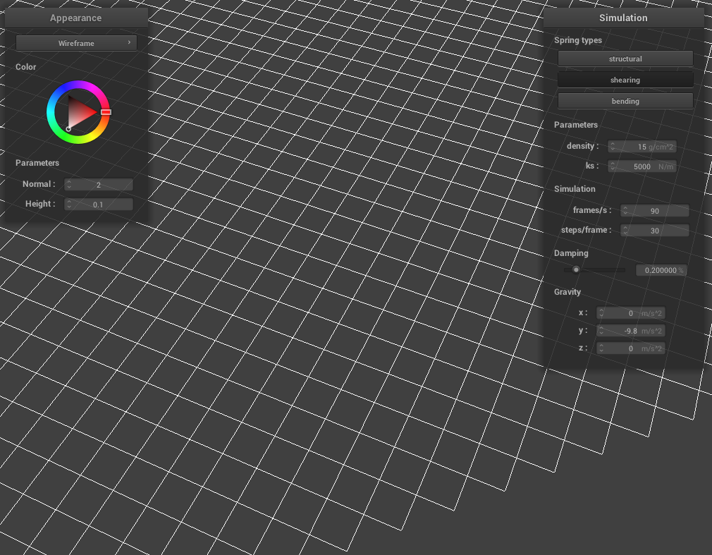
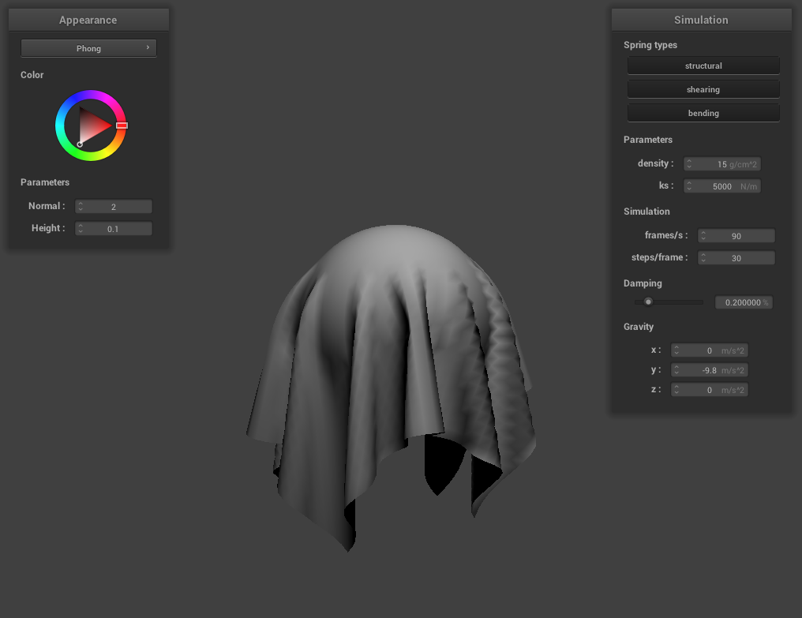
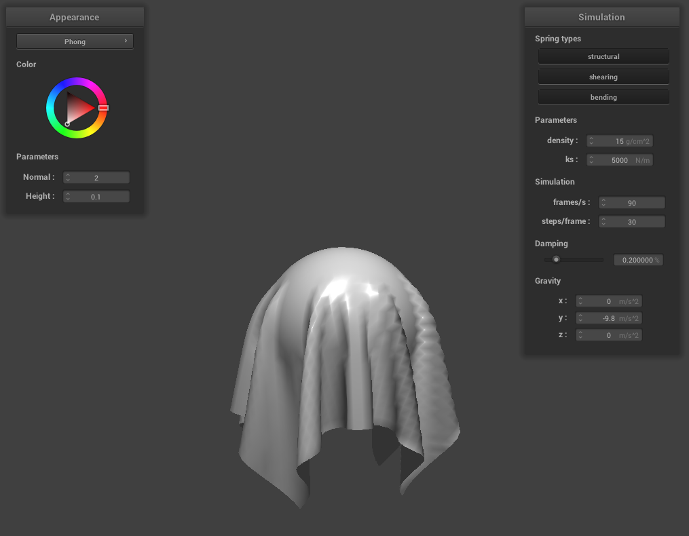

Overview
In this project, I built cloth simulation based on springs and masses.
It supports self-collision and collision with other objects.
Shaders can also be used in the render process.
Part I: Masses and springs
From the figures, we can see the wireframe and three types of constraints applied to the point masses.
Structural constrains connect a point mass and the point mass to its left as well as the point mass above it.
Shearing constraints connect a point mass and the point mass to its diagonal upper left as well as the point mass to its diagonal upper right.
Bending constraints connect a point mass and the point mass two away to its left as well as the point mass two above it.
|
Pinned2.
|
All constraints.
|
|

Only shear constraints.
|
Without shear constraints.
|
Part II: Simulation via numerical integration
Compare Differences
As ks increases, the force created bt the springs increases given the same displacement distance.
As shown in the figures below, with a very small ks, the cloth tend to be stretched down more.
If ks is very large, the cloth surface tend to be more flat, and it is less pulled down by gravity.
Density also reflects how much force gravity can create on the cloth. As density increases,
more force is applied to the cloth, and it is pulled down by gravity more.
The images below show an opposite effect than changing ks.
Damping can be interpreted as air friction or how much force is removed during the motion.
When damping is very large, the falling speed is very slow,
but when the cloth falls down to the lowest position, it does not oscillate to the opposite direction.
When damping is very small, it falls down quickly and oscillates back and forth, which converges to
its rest state very slowly. The two figures below for damping are not in their rest states.
|
Low density.
|
High density.
|
|
Low damping (not in rest state).
|
High damping (not in rest state).
|
Pinned4 images
|
Pinned4 normals.
|
Pinned4 wireframe.
|
Part III: Handling collisions with other objects
ks Differences
ks reflects the magnitude of force created by springs given the same displacement distance.
In the three images below, we can see that as ks increases, the spring force increases,
so the cloth is less stretched down by gravity.
We can also interpret that the cloth material becomes less stretchy and it can retain is shape more.
|
500 ks.
|
5000 ks.
|
50000 ks.
|
More cloth images
|
Colored wireframe.
|
Diffusive shading.
|
Part VI: Handling self-collisions
Collision Process
|
State 1.
|
 State 2.
State 2.
|
Differences in ks and Density
The falling speed is roughly the same. However, as density increases,
the cloth becomes less bouncy and smooth as it falls on itself and ground.
When ks is small, the cloth surface is more smooth and it is less likely to be bent easily.
For ks, the situation is opposite. When ks is large, the cloth surface looks more smooth,
and it tends to spread out more in its final rest state. As ks becomes smaller, cloth can be
bent more easily and is less likely to spread out in the final rest state.
|
High density.
|
Low density.
|
Part V: Shaders
Shaders
Shaders are small programs run by GPU cores at specific steps within the graphics pipeline.
In this project, vertex shader processes the incoming data at each vertex.
The vertex position, normal, and tangent are transform into world space. The output data is
then sent to the other parts in the graphics pipeline, such as geometry processing and rasterization.
After rasterization, the fragment shader takes in required information at each pixel location to calculate the color to render.
By injecting code into the graphics pipeline through shader programs, we can create difference effects in rendering.
Blinn-Phong Shader
Blinn-Phong lighting model is composed of ambient light, diffuse light, and specular light.
Ambient lighting is the same everywhere on the object, which gives a basic color for dark places on the object.
Diffuse lighting depends on the direction of the light, but the light going out in all direction is the same.
Specular lighting approximates reflection, so the lighting is stronger near the reflection direction.
Adding all three lightings up, we get the shading that approximates real lighting effect.
 Ambient.
Ambient.
|

Diffuse.
|
|
Specular.
|

Blinn-Phong.
|
Texture Mapping Shader
Bump and Displacement Shader
Looking far away from the objects, overall the two methods produce roughly the same shader effects.
When looking closely, bump shader only changes the lighting color on the texture and the geometry remains the same,
but displacement shader also changes the position of the vertices.
As a result, displacement shaders make the geometry more realistic and match the lighting effect.
New geometry is created to match the lighting and normal changes, so when inspecting closely,
we can see very realistic rendered effects.
Increasing mesh coarseness can have a much greater impact on the displacement shader than the bump shader.
For the bump shader, because positions of vertices are not changed in the program,
increasing mesh coarseness only makes the sphere surface less smooth. For the displacement shader,
more mesh vertices can produce finer details on the new geometry. As mesh becomes more coarse in displacement shading,
there would be not enough vertices to create the displacement that matches the changes in normal,
which makes the shader much less realistic. The comparison is shown in the zoomed-in images,
where displacement shading looks much worse as mesh density goes down to 16.
|
Bump cloth 16.
|
Bump sphere 16.
|
Displacement sphere 16.
|
|
Bump cloth 128.
|
Bump sphere 128.
|
Displacement sphere 128.
|
|
Displacement sphere 128 (zoomed in).
|
Displacement sphere 16 (zoomed in).
|
Mirror Shader